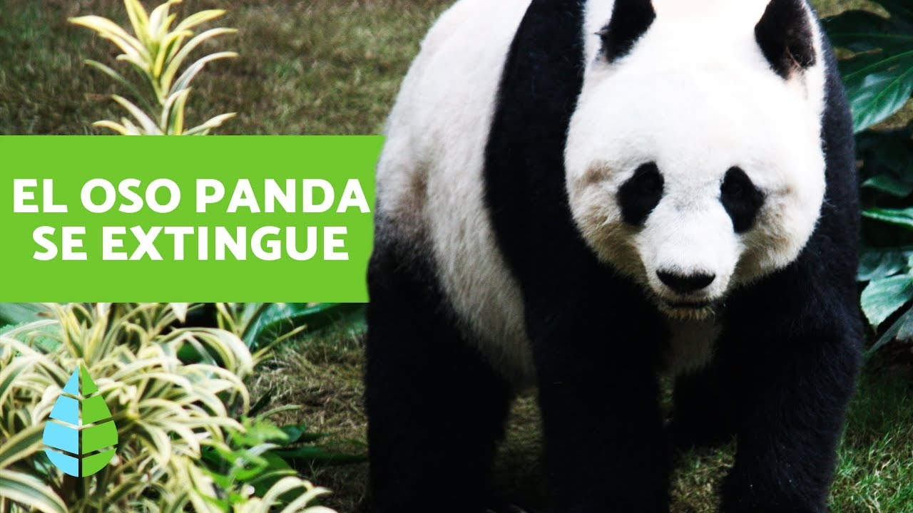
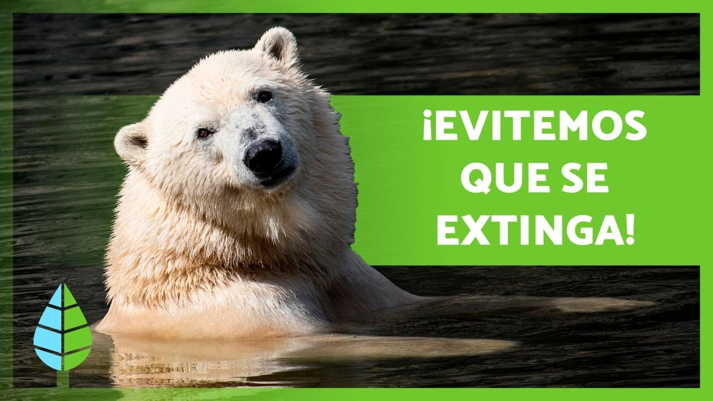

Animales en peligro de extinción

A pesar de ser tan reconocido y de no tener muchos depredadores naturales, los pandas aún están en riesgo. Las graves amenazas ocasionadas por los humanos han reducido a 1,800 la población de pandas en la naturaleza.

La pérdida de su hábitat, el hielo marino, debido al cambio climático, es la mayor amenaza para la supervivencia de los osos polares. Sin embargo también enfrentan otras amenazas como los conflictos con los humanos, la caza insostenible y los impactos generados por la industria.